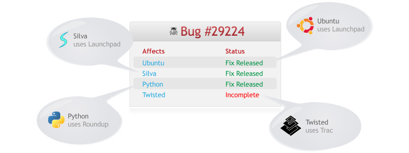
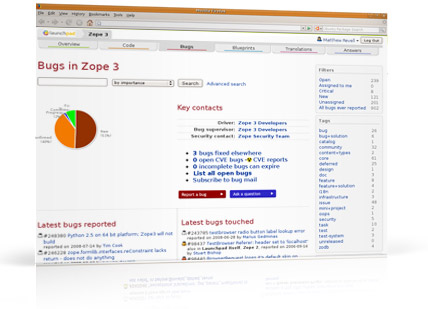
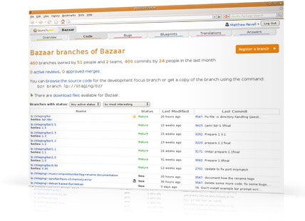

2 of 11

Sharing code means sharing bugs: issues found in free software may originate in code upstream or downstream in a distribution’s packaging. Launchpad tracks how each bug affects different communities and helps you work across project boundaries to find a fix.

Each group – whether projects or distributions – can track how the bug affects them by recording their own own status, importance and assignee.

Launchpad can import bug statuses from external trackers directly into your bug report. There’s even a “Bugs fixed elsewhere” report that shows which of your bugs are marked fixed in external trackers.
Instead, link bug reports to code branches that contain proposed fixes. Download the branch and test it without the hassle of applying patches. Thanks to Bazaar, it’s easy to merge bug fix branches into your project’s trunk.
Assign the Bug Supervisor role to an individual or team who can help plan work on bugs by targeting them to future milestones, setting reserved bug statuses and dealing with private bugs. Appoint a Security Contact to handle bugs marked as security issues.
You can also subscribe to individual bugs or all the bugs associated with a particular project or distribution package. Bug mail goes both ways: file new bugs, make comments, update statuses, add attachments and more by email. All you need is a GPG key.